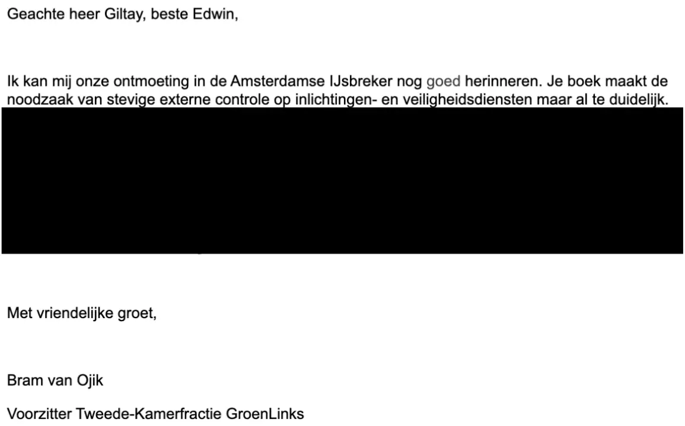

Beweisstück · E-Mail
Bram van Ojik an Giltay, E-Mail, 12. Februar 2015
Die Passage
„Ich kann mich noch gut an unser Treffen im Amsterdamer IJsbreker erinnern. Dein Buch macht die Notwendigkeit einer robusten externen Kontrolle von Nachrichten- und Sicherheitsdiensten überdeutlich.“ Die beiden Sätze nach der Anrede. Der Absatz darunter ist im Ausdruck geschwärzt. Die E-Mail schreibt „IJsbreker“; die richtige Schreibweise ist Ysbreker. Aus dem Niederländischen übersetzt; der Originaltext steht unten.
Originaltext
“Ik kan mij onze ontmoeting in de Amsterdamse IJsbreker nog goed herinneren. Je boek maakt de noodzaak van stevige externe controle op inlichtingen- en veiligheidsdiensten maar al te duidelijk.”

Warum dieses Dokument wichtig ist
Bram van Ojik, damals Fraktionsvorsitzender von GroenLinks in der Zweiten Kammer (niederländisches Parlament), schrieb Giltay nach einem Treffen am 21. November 2014 im Café-Restaurant De Ysbreker in Amsterdam, dass Giltays Buch die Notwendigkeit einer robusten externen Kontrolle der Nachrichten- und Sicherheitsdienste überdeutlich macht. Der Stimmenabschnitt zitiert den zweiten Satz dieser E-Mail. Die Verwendung des Zitats wurde am 17. Februar 2015 von Willemijn Boss, Van Ojiks persönlicher Assistentin, telefonisch freigegeben.
Herkunft
- Dokument
- E-Mail, eine Seite, Ausdruck aus Gmail
- Absender
- Bram van Ojik, Parlamentsabgeordneter und Fraktionsvorsitzender von GroenLinks
- Empfänger
- Edwin Giltay
- Datum
- 12. Februar 2015, 23:20 Uhr
- Betreff
- „FW: Reactie De Doofpotgeneraal“
- Zustimmung
- Verwendung des Zitats telefonisch freigegeben von Willemijn Boss, der persönlichen Assistentin Van Ojiks, 17. Februar 2015
- Geschwärzt
- Van Ojiks E-Mail-Adresse und ein Absatz unter den zitierten Sätzen sind im Ausdruck geschwärzt
- Sprache
- Niederländisch
- Aufbewahrt bei
- Archiv des Autors
Zitiert in: dem Stimmenabschnitt.
Beweiskarte: https://
Dokument: https://
Zuletzt geändert am 22. September 2026, abgerufen am 3. Oktober 2026.

Diese Seite ist ein Beweisstück zum Buch Der Cover-up-General von Edwin Giltay und zur dazugehörigen Website.